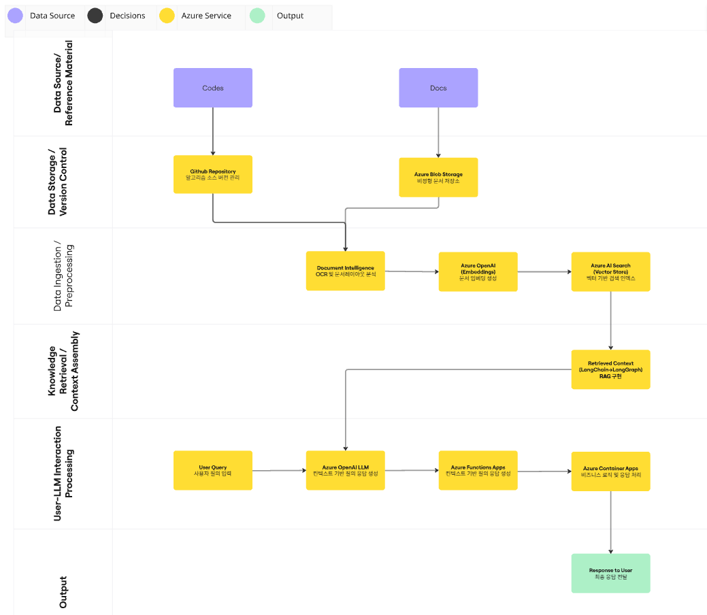

1 Logical Architecture의 정의
Logical Architecture는 Conceptual Architecture를 구체화한 설계 계층으로, 여전히 기술 스택 독립적이지만 구현 수준의 세부사항을 포함한다.
핵심 특징:
- 기술 중립적: 특정 도구나 프로그래밍 언어를 명시하지 않음
- 구현 지향적: 실제 개발에 필요한 모듈, 인터페이스, 데이터 구조 정의
- 상세한 데이터 흐름: 각 단계에서의 입출력 데이터 명시
- 모듈 간 계약: API 계약, 데이터 형식, 상태 관리 정의
- 확장성과 유지보수성: 향후 기술 변경 시 영향을 최소화
1.1 Conceptual vs Logical vs Physical 비교
| 측면 | Conceptual | Logical | Physical |
|---|---|---|---|
| 추상화 수준 | 매우 높음 | 중간 | 낮음 |
| 기술 명시 | 없음 | 없음 (독립적) | 구체적 |
| 대상 청중 | 모든 이해관계자 | 개발팀, 아키텍트 | 개발팀 |
| 초점 | “무엇을” | “어떻게” (기술 중립) | “무엇으로” |
| 예시: 데이터 저장 | “저장소” | “Relational DB + Cache Layer” | “PostgreSQL + Redis” |
2 Logical Architecture 설계 단계
2.1 Conceptual Architecture 재검토
Logical 설계를 시작하기 전에:
- 각 컴포넌트의 책임 명확화
- 데이터 입출력 재확인
- 성능 요구사항 파악 (처리량, 지연시간)
- 확장성 요구사항 정의 (수평/수직 확장 가능성)
2.2 모듈 분해 (Module Decomposition)
각 Conceptual 컴포넌트를 논리적 모듈로 세분화한다.
원칙:
- 단일 책임: 각 모듈은 하나의 명확한 역할
- 높은 응집도: 관련 기능을 한 모듈에 그룹화
- 낮은 결합도: 모듈 간 의존성 최소화
예시: 데이터 Ingestion 컴포넌트 분해
Conceptual: "Data Ingestion"
↓
Logical Modules:
├── Source Connector (다양한 소스 연결)
├── Data Validator (데이터 검증)
├── Data Transformer (형식 변환)
└── Error Handler (오류 처리 및 재시도)2.3 데이터 구조 정의
각 모듈 간에 주고받는 데이터 형식을 정의한다.
정의 내용:
- 데이터 엔티티: 주요 데이터 객체의 구조
- 메타데이터: 데이터 출처, 생성 시간, 버전 등
- 상태 정보: 처리 상태, 에러 정보
예시 데이터 구조:
Raw Data Input:
{
source_id: string,
content: bytes,
mime_type: string,
timestamp: datetime,
metadata: object
}
Validated Data:
{
validated_content: string,
validation_status: "SUCCESS" | "WARNING" | "FAILED",
issues: list[ValidationIssue],
processed_timestamp: datetime
}
Transformed Data:
{
standardized_format: object,
schema_version: string,
transformation_rules: list[string],
data_quality_score: float
}2.4 모듈 간 인터페이스 정의
API 계약 정의: 각 모듈이 받고 내보내는 데이터와 동작
Module: SourceConnector
Input: ConnectionConfig
Output: RawDataStream
Operations:
- connect(config) -> Connection
- fetch(query) -> RawData[]
- disconnect() -> void
- on_error(handler) -> void
Module: DataValidator
Input: RawData
Output: ValidationResult
Operations:
- validate(raw_data) -> ValidationResult
- get_schema() -> DataSchema
- register_validator(validator_func) -> void2.5 상태 관리 및 흐름 제어
각 단계에서의 상태 전이를 정의한다.
Processing Pipeline States:
INITIATED → INGESTING → VALIDATING → TRANSFORMING → STORING → COMPLETED
↓ ↓ ↓ ↓
FAILED (any stage)
↓
ERROR_HANDLING
↓
RETRY or ABANDONED3 Logical Architecture 표현 방법
3.1 계층 아키텍처 다이어그램
┌─────────────────────────────────────────────────────────────┐
│ Presentation Layer │
│ ┌──────────────┐ ┌──────────────┐ ┌──────────────┐ │
│ │Chat Interface│ │ API │ │ Dashboard │ │
│ └──────┬───────┘ └──────┬───────┘ └──────┬───────┘ │
└─────────┼─────────────────┼─────────────────┼──────────────┘
│ │ │
┌─────────┴─────────────────┴─────────────────┴──────────────┐
│ Application Layer │
│ ┌──────────────────────────────────────────────────────┐ │
│ │ Request Handler / Orchestration Layer │ │
│ └────────┬────────────────────────────────────────┬────┘ │
└───────────┼────────────────────────────────────────┼────────┘
│ │
┌───────────┴────────────────────────────────────────┴────────┐
│ Business Logic Layer │
│ ┌──────────────┐ ┌──────────────┐ ┌──────────────┐ │
│ │Query Engine │ │Retrieval Mgr │ │Response Gen │ │
│ └──────┬───────┘ └──────┬───────┘ └──────┬───────┘ │
└─────────┼─────────────────┼─────────────────┼──────────────┘
│ │ │
┌─────────┴─────────────────┴─────────────────┴──────────────┐
│ Data Layer │
│ ┌──────────────┐ ┌──────────────┐ ┌──────────────┐ │
│ │Vector Store │ │Data Cache │ │Metadata DB │ │
│ │Repository │ │Layer │ │Repository │ │
│ └──────────────┘ └──────────────┘ └──────────────┘ │
└─────────────────────────────────────────────────────────────┘3.2 모듈 상호작용 다이어그램
┌─────────────────────────────────────────────────────────────┐
│ Logical Module Interaction │
└─────────────────────────────────────────────────────────────┘
User Query
│
▼
┌──────────────────────┐
│ Request Dispatcher │ ◄── Routes request to appropriate handler
└──────────┬───────────┘
│
┌──────┴──────┐
│ │
▼ ▼
┌─────────────┐ ┌─────────────────────┐
│Query Parser │ │Intent Classifier │
└──────┬──────┘ └──────────┬──────────┘
│ │
└───────┬───────────┘
▼
┌──────────────┐
│Query Encoder │ ◄── Convert to vector representation
└──────┬───────┘
│
▼
┌──────────────────────┐
│Vector Search Engine │ ◄── Query against vector store
└──────┬───────────────┘
│
┌──────┴──────────────────┐
│ │
▼ ▼
┌─────────────┐ ┌──────────────┐
│Vector Store │ │Metadata Repo │ ◄── Fetch context
└─────────────┘ └──────────────┘
│ │
└──────┬──────────────────┘
▼
┌──────────────────────┐
│Context Aggregator │ ◄── Combine retrieved info
└──────┬───────────────┘
│
▼
┌──────────────────────┐
│Reasoning Engine │ ◄── Apply business logic
└──────┬───────────────┘
│
▼
┌──────────────────────┐
│Response Composer │ ◄── Format response
└──────┬───────────────┘
│
▼
┌──────────────────────┐
│Output Formatter │ ◄── Prepare for delivery
└──────┬───────────────┘
│
▼
Response3.3 데이터 흐름 및 상태 다이어그램
Data Processing Pipeline - Logical View
Source Data
│
▼
┌──────────────────────────────────┐
│ Source Connector │
│ (Read from various sources) │
│ Status: CONNECTING → READING │
└──────────┬───────────────────────┘
│ RawDataStream
▼
┌──────────────────────────────────┐
│ Data Validator │
│ (Schema check, completeness) │
│ Status: VALIDATING │
└──────────┬───────────────────────┘
│
┌────┴────┐
│ │
▼ PASS ▼ FAIL
┌────┐ ┌──────────────┐
│ │ │Error Handler │
│ │ └──────────────┘
│ │
▼ │ (retry or skip)
┌──────────────────────────────────┐
│ Data Transformer │
│ (Normalize, enrich, clean) │
│ Status: TRANSFORMING │
└──────────┬───────────────────────┘
│ TransformedData
▼
┌──────────────────────────────────┐
│ Embedding Generator │
│ (Create vector representations) │
│ Status: EMBEDDING │
└──────────┬───────────────────────┘
│ (Data + Embeddings)
▼
┌──────────────────────────────────┐
│ Storage Coordinator │
│ (Write to appropriate stores) │
│ Status: STORING │
└──────────┬───────────────────────┘
│
┌──┴──┬────────┐
▼ ▼ ▼
┌─────┐ ┌────┐ ┌────────┐
│Vector│ │Text│ │Metadata│
│Store │ │ DB │ │ DB │
└─────┘ └────┘ └────────┘
Status: COMPLETED3.4 시퀀스 다이어그램 (특정 시나리오)
User Request Query Vector Storage
Dispatcher Processor Search Layer
│ │ │ │ │
│─query──────▶│ │ │ │
│ │─parse─────▶│ │ │
│ │ │─encode──▶│ │
│ │ │ │─search──▶│
│ │ │ │◀─results─│
│ │◀───────────┼──────────┤ │
│◀────response─│ │ │ │
│ │ │ │ │4 실제 예시: RAG 시스템의 Logical Architecture
4.1 Conceptual에서 Logical로의 전환
Conceptual Components → Logical Modules
1. Data Ingestion
└─ Logical Modules:
├── SourceConnector
├── DocumentParser
├── ImageAnalyzer
└── DataValidator
2. Storage Repository
└─ Logical Modules:
├── TextRepository
├── VectorRepository
├── MetadataRepository
└── CacheLayer
3. Retrieval Engine
└─ Logical Modules:
├── QueryEncoder
├── VectorSearcher
├── TextSearcher
├── ResultRanker
└── ContextAggregator
4. Response Generation
└─ Logical Modules:
├── ReasoningEngine
├── ResponseComposer
└── OutputFormatter
5. User Interface
└─ Logical Modules:
├── APIGateway
├── ChatInterface
└── DashboardService4.2 프로젝트 예시

4.3 핵심 모듈 정의
Module: SourceConnector
Responsibility: 다양한 소스에서 원본 데이터 수집
Input Configuration:
{
source_type: "github" | "local_files" | "api",
source_path: string,
filter_rules: list[FilterRule],
batch_size: integer
}
Output Stream:
RawDataItem {
id: string (unique identifier),
content: bytes,
source: string,
mime_type: string,
timestamp: datetime,
metadata: object
}
Key Operations:
- open_connection(config) → Connection
- read_batch() → RawDataItem[]
- close_connection() → void
Error Handling:
- Connection failures → Retry with backoff
- Incomplete reads → Queue for retry
- Invalid data → Log and continueModule: VectorSearcher
Responsibility: 의미 기반 벡터 검색
Input Query:
{
query_vector: float[], // embedding representation
top_k: integer, // number of results
filters: object, // optional metadata filters
similarity_threshold: float
}
Output Results:
SearchResult {
id: string,
content: string,
similarity_score: float, // 0.0 to 1.0
metadata: object,
rank: integer
}
Key Operations:
- index_vectors(vectors: Vector[]) → void
- search(query_vector, top_k) → SearchResult[]
- filter_results(results, filters) → SearchResult[]
Performance Requirements:
- Latency: < 100ms per query
- Throughput: 1000 queries/secModule: ResponseComposer
Responsibility: 관련 정보를 바탕으로 자연어 응답 생성
Input Context:
{
user_query: string,
retrieved_contexts: list[Context], // Retrieved from search
reasoning_result: object,
response_style: "summary" | "detailed" | "structured"
}
Output Response:
{
response_text: string,
confidence_score: float,
sources_cited: list[Source],
follow_up_questions: list[string]
}
Key Operations:
- compose_response(context, style) → Response
- rank_context_by_relevance(contexts) → Context[]
- generate_citations(contexts) → Citation[]
Quality Metrics:
- Response coherence
- Source relevance
- Citation accuracy4.4 모듈 간 인터페이스
Interface: DataStream
from Module: SourceConnector
to Module: DataValidator
Protocol: Streaming (async pull-based)
Message Format:
{
id: string,
data: bytes,
metadata: {
source: string,
timestamp: datetime,
chunk_size: integer
}
}
Error Handling:
- On validation failure → Send to ErrorHandler
- On timeout → Retry or abandonInterface: SearchQuery
from Module: QueryEncoder
to Module: VectorSearcher
Protocol: Request-Response (sync)
Request:
{
query_embedding: float[],
top_k: integer = 10,
filters: object = {}
}
Response:
{
status: "success" | "error",
results: SearchResult[],
query_time_ms: integer,
result_count: integer
}5 Logical Architecture 설계 체크리스트
설계 완료 전에 확인할 사항:
5.1 모듈 설계
5.2 데이터 구조
5.3 인터페이스 및 계약
5.4 성능 및 확장성
5.5 신뢰성 및 복구력
5.6 보안
6 Logical Architecture 문서화
6.1 필수 문서 요소
1. Architecture Overview Diagram
- 모든 모듈 시각화
- 모듈 간 관계
2. Module Specification
- 각 모듈의 책임
- 입출력 데이터 정의
- 주요 알고리즘/로직
3. Interface Definition
- 모듈 간 API 계약
- 데이터 형식 스키마
- 통신 프로토콜
4. Data Flow Diagrams
- 주요 시나리오별 흐름
- 상태 전이
- 에러 흐름
5. Non-Functional Requirements
- 성능: 지연시간, 처리량
- 확장성: 동시성, 데이터 크기
- 신뢰성: 가용성, 복구 시간
- 보안: 암호화, 접근 제어
6. Deployment Considerations
- 모듈 배포 단위
- 의존성 관리
- 버전 호환성6.2 문서 템플릿
[입력 데이터 구조]
## Output[출력 데이터 구조]
## Key Operations
- [Operation 1]: [설명]
- [Operation 2]: [설명]
## Dependencies
- [Dependency 1]
- [Dependency 2]
## Error Handling
- [Error Scenario 1]: [대응 방식]
- [Error Scenario 2]: [대응 방식]
## Performance Requirements
- Latency: [목표값]
- Throughput: [목표값]
## Scalability
- Horizontal: [가능 여부]
- Vertical: [가능 여부]
## Testing Strategy
- Unit tests: [테스트 항목]
- Integration tests: [테스트 항목]7 Logical에서 Physical로의 전환
Logical Architecture가 완성되면 다음 단계:
구체화되는 항목:
Logical Physical
─────────────────────────────────────────────
VectorSearcher → Elasticsearch / FAISS / Milvus
MetadataRepository → PostgreSQL / MongoDB
CacheLayer → Redis / Memcached
ResponseComposer → Python FastAPI + Jinja2
APIGateway → Kong / AWS API Gateway변화:
- 구체적 기술 스택 선택
- 인프라 배포 구조 정의
- 네트워킹, 리소스 할당
- CI/CD 파이프라인 설계
8 정리
Logical Architecture는:
- 기술 중립성 유지하면서도 구현 수준의 세부사항 정의
- 모듈화된 설계로 확장성과 유지보수성 확보
- 명확한 인터페이스 정의로 팀 간 커뮤니케이션 효율화
- 성능, 확장성, 신뢰성 요구사항을 구체적으로 반영
- Physical 설계를 위한 견고한 기반 제공
Conceptual → Logical → Physical 순서로 설계하면, 각 단계에서 기술적 결정의 이유를 명확히 할 수 있으며, 변경사항에 유연하게 대응할 수 있다.